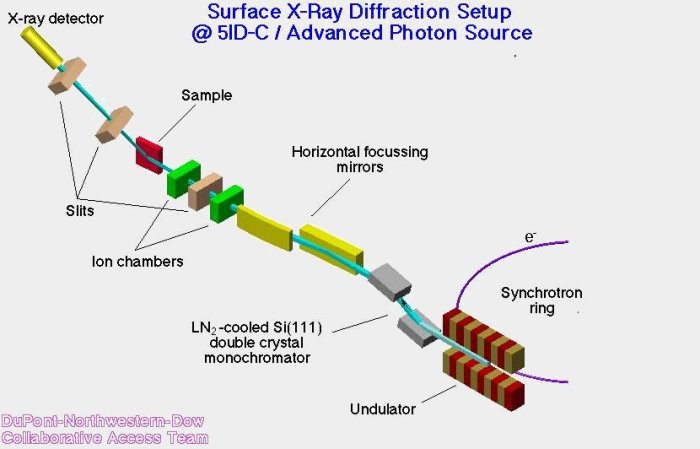

|

For more information, see:
-
 "Surface and interface studies at APS endstation 5ID-C,"
D.A. Walko, O. Sakata, P.F. Lyman, T.-L. Lee, B.P. Tinkham, J.S.
Okasinski, Z. Zhang, and M.J. Bedzyk, in "Synchrotron Radiation
Instrumentation: Eighth International Conference," edited by
T. Warwick, J. Arthur, H.A. Padmore, and J. Stohr, AIP Conference
Proceedings 705, American Institute of Physics, New York,
1166-1169 (2004).
"Surface and interface studies at APS endstation 5ID-C,"
D.A. Walko, O. Sakata, P.F. Lyman, T.-L. Lee, B.P. Tinkham, J.S.
Okasinski, Z. Zhang, and M.J. Bedzyk, in "Synchrotron Radiation
Instrumentation: Eighth International Conference," edited by
T. Warwick, J. Arthur, H.A. Padmore, and J. Stohr, AIP Conference
Proceedings 705, American Institute of Physics, New York,
1166-1169 (2004).
-
"UHV Surface-Analysis Endstation with X-ray Scattering and
Spectroscopic Capabilities," P.F. Lyman, D.T. Keane, and
M.J. Bedzyk, AIP Conference Proceedings -- July 1, 1997 --
417, 10-14 (1998).
|